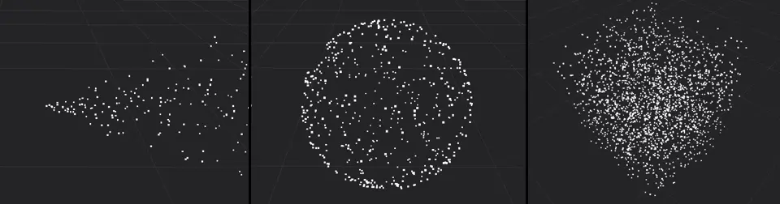
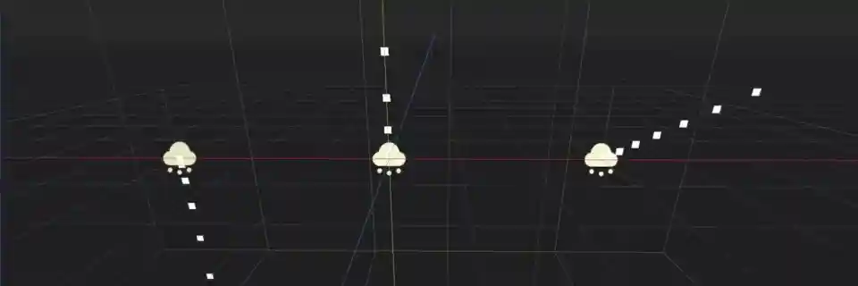
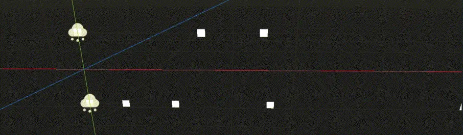
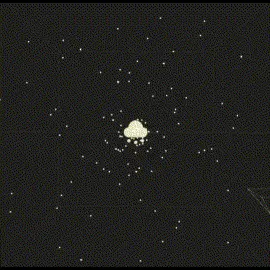
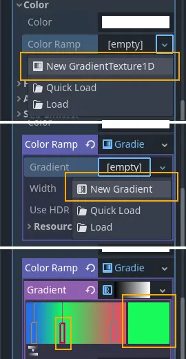
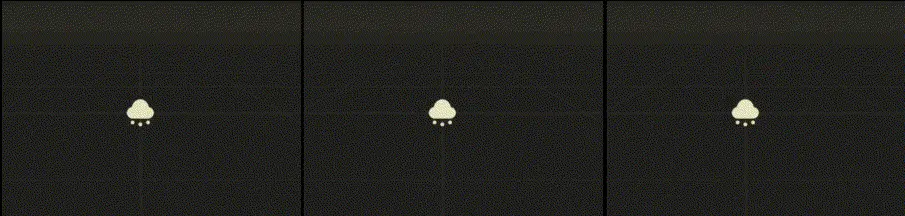
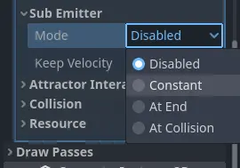

Các thuộc tính của process material

Thuộc tính min, max và curve
Các thuộc tính trong material này điều khiển cách các hạt hoạt động và thay đổi trong suốt vòng đời của chúng. Nhiều thuộc tính có các giá trị Min, Max và Curve cho phép bạn tinh chỉnh hành vi của chúng. Mối quan hệ giữa các giá trị này như sau: khi một hạt được sinh ra, thuộc tính được gán một giá trị ngẫu nhiên giữa Min và Max. Nếu Min và Max bằng nhau, giá trị sẽ luôn giống nhau cho mọi hạt. Nếu Curve cũng được đặt, giá trị của thuộc tính sẽ được nhân với giá trị của đường cong tại thời điểm hiện tại trong vòng đời của hạt. Hãy dùng đường cong để thay đổi thuộc tính theo vòng đời của hạt. Bằng cách này có thể biểu diễn những hành vi rất phức tạp.
Ghi chú
Trang này đề cập cụ thể đến cách dùng ParticleProcessMaterial cho scene 3D. Để biết cách dùng nó trong scene 2D, hãy xem Sử dụng ParticleProcessMaterial trong 2D.
Thời gian
Thuộc tính Lifetime Randomness điều khiển mức độ ngẫu nhiên áp dụng cho vòng đời của mỗi hạt. Giá trị 0 nghĩa là hoàn toàn không ngẫu nhiên và mọi hạt sống trong cùng một khoảng thời gian, được đặt bởi thuộc tính Lifetime. Giá trị 1 nghĩa là vòng đời của hạt hoàn toàn ngẫu nhiên trong khoảng [0.0, Lifetime].
Cờ của hạt
Thuộc tính Align Y căn trục Y của mỗi hạt theo vận tốc của nó. Bật thuộc tính này tương đương với việc đặt thuộc tính Transform Align thành Y to Velocity.
Thuộc tính Rotate Y hoạt động cùng các thuộc tính trong nhóm Angle và Angular Velocity để điều khiển chuyển động xoay của hạt. Rotate Y phải được bật nếu bạn muốn áp dụng bất kỳ phép xoay nào cho hạt. Ngoại lệ là những hạt dùng Standard Material có thuộc tính Billboard được đặt thành Particle Billboard. Trong trường hợp đó, hạt vẫn xoay dù không bật Rotate Y.
Khi thuộc tính Disable Z được bật, hạt sẽ không di chuyển dọc theo trục Z. Đó là trục Z cục bộ của hệ thống hạt hay trục Z của thế giới được quyết định bởi thuộc tính Local Coords.
Thuộc tính Damping as Friction thay đổi hành vi của damping từ giảm tốc không đổi thành giảm tốc dựa trên tốc độ.
Spawn
Hình dạng phát xạ
Hạt có thể được phát ra từ một điểm duy nhất trong không gian hoặc theo cách lấp đầy một hình dạng. Thuộc tính Shape điều khiển hình dạng đó. Point là giá trị mặc định. Mọi hạt đều được phát ra từ một điểm duy nhất ở trung tâm hệ thống hạt. Khi đặt thành Sphere hoặc Box, hạt được phát ra sao cho lấp đầy đều một hình cầu hoặc hình hộp. Bạn có toàn quyền điều khiển kích thước của các hình dạng này. Sphere Surface hoạt động giống Sphere, nhưng thay vì lấp đầy, mọi hạt đều sinh ra trên bề mặt hình cầu.

Hạt được phát ra từ một điểm (trái), trong hình cầu (giữa) và trong hình hộp (phải)

Một hệ thống hạt hình vòng
Hình dạng phát Ring khiến hạt được phát ra theo hình vành khuyên. Bạn có thể điều khiển hướng của vành bằng cách thay đổi thuộc tính Ring Axis. Ring Height điều khiển độ dày của vành dọc theo trục của nó. Ring Radius và Ring Inner Radius điều khiển độ rộng của vành và kích thước của lỗ ở giữa. Hình minh họa cho thấy một hệ thống hạt có bán kính 2 và bán kính trong 1.5, trục hướng theo trục Z toàn cục.
Ngoài các hình dạng tương đối đơn giản này, bạn có thể chọn tùy chọn Points hoặc Directed Points để tạo các hình dạng phát rất phức tạp. Xem mục Hình dạng phát phức tạp để biết giải thích chi tiết về cách thiết lập chúng.
Angle
Thuộc tính Angle điều khiển góc xoay ban đầu của hạt như mô tả ở trên. Để thực sự có tác dụng lên hạt, bạn phải bật một trong hai thuộc tính: Rotate Y xoay hạt quanh trục Y của hệ thống hạt. Thuộc tính Billboard trong Standard Material, nếu được đặt thành Particle Billboard, sẽ xoay hạt quanh trục hướng từ hạt tới camera.
Hướng
Ghi chú
Chỉ riêng thuộc tính Direction thì chưa đủ để thấy hạt chuyển động. Mọi giá trị bạn đặt ở đây chỉ có tác dụng khi các thuộc tính vận tốc hoặc gia tốc cũng được đặt.
Thuộc tính Direction là một vector điều khiển hướng chuyển động của mỗi hạt tại thời điểm nó được sinh ra. Giá trị (X=1,Y=0,Z=0) sẽ khiến mọi hạt di chuyển sang ngang dọc theo trục X. Với thứ như đài phun nước, nơi hạt bắn lên không trung, giá trị (X=0,Y=1,Z=0) là điểm khởi đầu tốt.

Các giá trị hướng khác nhau: chỉ trục Y (trái), giá trị bằng nhau cho X và Y (giữa), X và Y có bật trọng lực (phải)
Sau khi đặt hướng, bạn sẽ thấy mọi hạt di chuyển cùng một hướng theo đường thẳng. Thuộc tính Spread thêm một chút biến thiên và ngẫu nhiên vào hướng của mỗi hạt. Giá trị càng cao, độ lệch khỏi đường đi ban đầu càng lớn. Giá trị 0 nghĩa là hoàn toàn không có độ tỏa, còn giá trị 180 khiến hạt bắn ra mọi hướng. Bạn có thể dùng điều này cho những thứ như mảnh vỡ trong hiệu ứng vụ nổ.

Không tỏa (trái), góc 45 độ (giữa), trọn 180 độ (phải)
Thuộc tính Flatness giới hạn độ tỏa dọc theo trục Y. Giá trị 0 nghĩa là không có giới hạn, còn giá trị 1 sẽ loại bỏ mọi chuyển động của hạt dọc theo trục Y. Các hạt sẽ tỏa ra hoàn toàn "phẳng".
Bạn sẽ không thấy chuyển động thực sự nào cho đến khi đặt thêm giá trị cho các thuộc tính vận tốc và gia tốc bên dưới, vì vậy hãy cùng xem chúng tiếp theo.
Vận tốc ban đầu
Trong khi thuộc tính Direction điều khiển hướng chuyển động của hạt, Initial Velocity điều khiển tốc độ của nó. Nó được tách thành Velocity Min và Velocity Max, cả hai mặc định đều là 0, đó là lý do ban đầu bạn không thấy chuyển động nào. Ngay khi bạn đặt giá trị cho một trong hai thuộc tính này như mô tả ở trên, hạt bắt đầu di chuyển. Hướng được nhân với các giá trị này, vì vậy bạn có thể khiến hạt di chuyển theo hướng ngược lại bằng cách đặt vận tốc âm.
Gia tốc
Gravity
Một vài nhóm thuộc tính tiếp theo phối hợp chặt chẽ với nhau để điều khiển chuyển động và xoay của hạt. Gravity kéo hạt theo hướng mà nó chỉ tới, mặc định là thẳng xuống dưới với cường độ bằng trọng lực Trái Đất. Trọng lực ảnh hưởng đến mọi chuyển động của hạt. Nếu game của bạn dùng vật lý và trọng lực của thế giới có thể thay đổi khi chạy, bạn có thể dùng thuộc tính này để giữ trọng lực của game đồng bộ với trọng lực của hạt. Giá trị Gravity là (X=0,Y=0,Z=0) nghĩa là sẽ không có hạt nào di chuyển nếu không đặt thuộc tính chuyển động nào khác.

Trái: (X=0,Y=-9.8,Z=0), giữa: (X=0,Y=9.8,Z=0), phải: (X=4,Y=2,Z=0).
Vận tốc góc
Angular Velocity điều khiển tốc độ xoay của hạt như mô tả ở trên. Bạn có thể đảo chiều bằng cách dùng số âm cho Velocity Min hoặc Velocity Max. Giống như thuộc tính Angle, chuyển động xoay chỉ hiển thị nếu cờ Rotate Y được bật hoặc chế độ Particle Billboard được chọn trong Standard Material.
Ghi chú
Thuộc tính Damping không có tác dụng lên vận tốc góc.
Gia tốc tuyến tính
Vận tốc của hạt là một giá trị không đổi: một khi đã đặt, nó không thay đổi và hạt sẽ luôn di chuyển với cùng tốc độ. Bạn có thể dùng thuộc tính Linear Accel để thay đổi tốc độ di chuyển trong suốt thời gian sống của hạt như mô tả ở trên. Giá trị dương sẽ tăng tốc hạt và khiến nó di chuyển nhanh hơn. Giá trị âm sẽ làm hạt chậm dần cho đến khi dừng lại và bắt đầu di chuyển theo hướng ngược lại.

Gia tốc tuyến tính âm (trên) và dương (dưới)
Điều quan trọng cần nhớ là khi thay đổi gia tốc, chúng ta không thay đổi trực tiếp vận tốc, mà thay đổi sự thay đổi của vận tốc. Giá trị 0 trên đường cong gia tốc không dừng chuyển động của hạt, mà dừng sự thay đổi trong chuyển động của hạt. Dù vận tốc của nó tại thời điểm đó là bao nhiêu, nó sẽ tiếp tục di chuyển với vận tốc đó cho đến khi gia tốc thay đổi lần nữa.
Gia tốc hướng tâm
Thuộc tính Radial Accel thêm một lực giống trọng lực lên mọi hạt, với gốc của lực nằm tại vị trí hiện tại của hệ thống hạt. Giá trị âm khiến hạt di chuyển về phía tâm, giống như lực hấp dẫn của một hành tinh lên các vật thể trên quỹ đạo của nó. Giá trị dương khiến hạt di chuyển ra xa tâm.

Gia tốc hướng tâm âm (trái) và dương (phải)
Gia tốc tiếp tuyến

Các tiếp tuyến trên một đường tròn
Thuộc tính này thêm gia tốc cho hạt theo hướng tiếp tuyến với một đường tròn nằm trên mặt phẳng XZ của hệ thống hạt, có tâm tại tâm của hệ thống và bán kính bằng khoảng cách giữa vị trí hiện tại của mỗi hạt và tâm hệ thống khi chiếu lên mặt phẳng đó.
Hãy cùng phân tích điều đó.
Tiếp tuyến của một đường tròn là một đường thẳng "chạm" vào đường tròn, vuông góc với bán kính của đường tròn tại điểm tiếp xúc. Một đường tròn trên mặt phẳng XZ của hệ thống hạt là đường tròn bạn thấy khi nhìn thẳng xuống hệ thống hạt từ phía trên.

Gia tốc tiếp tuyến nhìn từ trên xuống
Tangential Accel luôn bị giới hạn trong mặt phẳng đó và không bao giờ di chuyển hạt dọc theo trục Y của hệ thống. Vị trí của một hạt là đủ để xác định một đường tròn như vậy, trong đó khoảng cách đến tâm hệ thống là bán kính nếu ta bỏ qua thành phần Y của vector.
Thuộc tính Tangential Accel sẽ khiến hạt bay quanh tâm hệ thống hạt, nhưng bán kính sẽ liên tục tăng. Nhìn từ trên xuống, hạt sẽ di chuyển ra xa tâm theo hình xoắn ốc. Giá trị âm sẽ đảo chiều.
Damping
Thuộc tính Damping dần dần dừng mọi chuyển động. Mỗi frame, chuyển động của hạt bị làm chậm đi một chút trừ khi tổng gia tốc lớn hơn hiệu ứng damping. Nếu không, hạt sẽ tiếp tục chậm lại cho đến khi đứng yên hoàn toàn. Giá trị càng lớn, thời gian để hạt dừng hẳn càng ngắn.
Tương tác với attractor
Nếu bạn muốn hệ thống hạt tương tác với particle attractor, bạn phải bật thuộc tính Enabled. Khi nó bị tắt, hệ thống hạt sẽ bỏ qua mọi particle attractor.
Display
Tỉ lệ
Scale điều khiển kích thước của hạt như mô tả ở trên. Bạn có thể đặt các giá trị khác nhau cho Scale Min và Scale Max để ngẫu nhiên hóa kích thước của mỗi hạt. Giá trị âm không được phép, vì vậy bạn không thể lật hạt bằng thuộc tính này. Nếu bạn phát hạt dưới dạng billboard, thuộc tính Keep Size trên Standard Material trong các draw pass phải được bật thì việc co giãn mới có tác dụng.
Màu sắc
Thuộc tính Color điều khiển màu ban đầu của hạt. Nó chỉ có tác dụng sau khi thuộc tính Use As Albedo trong nhóm Vertex Color của Standard Material được bật. Thuộc tính này được nhân với màu đến từ thuộc tính Color hoặc Texture của chính material của hạt.

Thiết lập dải màu
Có hai thuộc tính Ramp trong nhóm Color. Chúng cho phép bạn định nghĩa một dải màu dùng để đặt màu cho hạt. Thuộc tính Color Ramp thay đổi màu của hạt trong suốt thời gian sống của nó. Nó đi qua toàn bộ dải màu mà bạn đã định nghĩa. Thuộc tính Color Initial Ramp chọn màu ban đầu của hạt từ một vị trí ngẫu nhiên trên dải màu.
Để thiết lập một color ramp, hãy nhấn vào ô bên cạnh tên thuộc tính và chọn New GradientTexture1D từ menu thả xuống. Nhấn vào ô đó lần nữa để mở chi tiết của texture. Tìm thuộc tính Gradient, nhấn vào ô bên cạnh nó và chọn New Gradient. Nhấn vào ô đó lần nữa và bạn sẽ thấy một dải màu. Nhấn vào bất kỳ đâu trên dải đó để chèn một điểm đánh dấu mới. Bạn có thể di chuyển điểm đánh dấu bằng chuột và xóa nó bằng cách nhấn chuột phải. Khi một điểm đánh dấu được chọn, bạn có thể dùng bộ chọn màu bên cạnh dải để đổi màu của nó.
Biến thiên sắc độ
Giống như thuộc tính Color, Hue Variation điều khiển màu của hạt, nhưng theo cách khác. Nó không đặt trực tiếp giá trị màu mà dịch chuyển sắc độ (hue) của màu.
Hue mô tả sắc của một màu: đỏ, cam, vàng, xanh lá, v.v. Nó không cho bạn biết gì về độ sáng hay độ bão hòa của màu. Thuộc tính Hue Variation điều khiển phạm vi các hue có sẵn như mô tả ở trên.
Nó hoạt động dựa trên màu hiện tại của hạt. Các giá trị bạn đặt cho Variation Min và Variation Max điều khiển mức hue được phép dịch chuyển theo mỗi hướng. Giá trị cao hơn tạo ra nhiều biến thiên màu hơn, còn giá trị thấp giới hạn các màu có sẵn ở những màu lân cận gần nhất với màu gốc.

Các giá trị khác nhau cho hue variation, cả hai lần đều dùng màu xanh dương làm màu gốc: 0.6 (trái) và 0.1 (phải)
Hoạt ảnh
Nhóm thuộc tính Animation điều khiển hành vi của hoạt ảnh sprite sheet trong Standard Material của hạt. Các giá trị Min, Max và Curve hoạt động như mô tả ở trên.
Sprite sheet hoạt ảnh là một texture chứa nhiều hình nhỏ hơn được sắp xếp trên một lưới. Các hình được hiển thị lần lượt nhanh đến mức chúng kết hợp lại thành một hoạt ảnh ngắn, giống như sách lật (flipbook). Bạn có thể dùng chúng cho các hạt có hoạt ảnh như khói hoặc lửa. Đây là các bước để tạo một hệ thống hạt có hoạt ảnh:
Một sprite sheet hoạt ảnh khói 8x8
Import một texture sprite sheet vào engine. Nếu bạn chưa có sẵn, bạn có thể tải
phiên bản độ phân giải cao của hình ví dụ.Thiết lập một hệ thống hạt có ít nhất một draw pass và gán một
Standard Materialcho mesh trong draw pass đó.Gán sprite sheet cho thuộc tính
Texturetrong nhómAlbedoĐặt thuộc tính
Billboardcủa material thànhParticle Billboard. Làm vậy sẽ hiện nhómParticles Animtrong material.Đặt
H Framesbằng số cột vàV Framesbằng số hàng trong sprite sheet.Bật
Loopnếu bạn muốn hoạt ảnh lặp lại liên tục.

Vậy là xong phần Standard Material. Bạn sẽ chưa thấy hoạt ảnh nào ngay. Đây là lúc các thuộc tính Animation phát huy tác dụng. Các thuộc tính Speed điều khiển tốc độ chạy hoạt ảnh của sprite sheet. Đặt Speed Min và Speed Max thành 1 và bạn sẽ thấy hoạt ảnh chạy. Các thuộc tính Offset điều khiển vị trí bắt đầu hoạt ảnh trên một hạt mới sinh. Theo mặc định, đó luôn là hình đầu tiên trong chuỗi. Bạn có thể thêm sự đa dạng bằng cách thay đổi Offset Min và Offset Max để ngẫu nhiên hóa vị trí bắt đầu.

Ba hệ thống hạt khác nhau dùng cùng một sprite sheet khói
Tùy vào số lượng hình ảnh trong sprite sheet và thời gian sống của hạt, hoạt ảnh có thể trông không mượt. Mối quan hệ giữa vòng đời của hạt, tốc độ hoạt ảnh và số hình ảnh trong sprite sheet như sau:
Ghi chú
Ở tốc độ hoạt ảnh 1.0, hoạt ảnh sẽ đến hình cuối cùng trong chuỗi đúng lúc vòng đời của hạt kết thúc.
Nếu sprite sheet của bạn chứa 64 (8x8) hình và thời gian sống của hạt được đặt là 1 second, hoạt ảnh sẽ rất mượt ở 64 FPS (1 giây / 64 hình). Nếu thời gian sống được đặt là 2 seconds, nó vẫn khá mượt ở 32 FPS. Nhưng nếu hạt tồn tại trong 8 seconds, hoạt ảnh sẽ giật thấy rõ ở 8 FPS. Để hoạt ảnh mượt trở lại, bạn cần tăng tốc độ hoạt ảnh lên khoảng 3 để đạt framerate chấp nhận được.

Cùng một hệ thống hạt với các thời gian sống khác nhau: 1 giây (trái), 2 giây (giữa), 8 giây (phải)
Lưu ý rằng Fixed FPS của node GPUParticles3D cũng ảnh hưởng đến việc phát hoạt ảnh. Để hoạt ảnh phát mượt, nên đặt nó thành 0 để hạt được mô phỏng trên mỗi frame được kết xuất. Nếu đây không phải là lựa chọn phù hợp với trường hợp của bạn, hãy đặt Fixed FPS bằng framerate thực tế mà hoạt ảnh flipbook dùng (xem công thức ở trên).
Nhiễu động (turbulence)
Turbulence thêm nhiễu vào chuyển động của hạt, tạo ra các họa tiết thú vị và sống động. Đánh dấu ô bên cạnh thuộc tính Enabled để kích hoạt nó. Một số thuộc tính mới sẽ xuất hiện để điều khiển tốc độ chuyển động, họa tiết nhiễu và mức ảnh hưởng tổng thể lên hệ thống hạt. Bạn có thể tìm giải thích chi tiết về chúng trong mục turbulence của hạt.
Va chạm
Thuộc tính Mode điều khiển việc emitter có va chạm với các node va chạm hạt hay không và va chạm như thế nào. Đặt thành Disabled để tắt mọi va chạm cho hệ thống hạt này. Đặt thành Hide On Contact nếu bạn muốn hạt biến mất ngay khi va chạm. Đặt thành Constant để hạt va chạm và nảy xung quanh. Bạn sẽ thấy hai thuộc tính mới xuất hiện trong Inspector. Chúng điều khiển cách hạt hành xử khi va chạm.
Giá trị Friction cao sẽ giảm hiện tượng trượt trên bề mặt. Điều này đặc biệt hữu ích nếu hạt va chạm với các bề mặt dốc và bạn muốn chúng nằm yên tại chỗ thay vì trượt xuống tận đáy, như tuyết rơi trên núi. Giá trị Bounce cao sẽ khiến hạt nảy ra khỏi bề mặt mà chúng va chạm, như bóng cao su trên mặt sàn cứng.
Nếu thuộc tính Use Scale được bật, kích thước va chạm cơ sở được nhân với scale hiện tại của hạt. Bạn có thể dùng điều này để đảm bảo kích thước kết xuất và kích thước va chạm khớp nhau đối với các hạt có scale ngẫu nhiên hoặc thay đổi theo thời gian.
Bạn có thể tìm hiểu thêm về va chạm hạt trong mục Va chạm của tài liệu này.
Sub-emitter

Các chế độ sub-emitter có sẵn
Thuộc tính Mode điều khiển cách thức và thời điểm sub-emitter được sinh ra. Đặt thành Disabled thì sẽ không bao giờ có sub-emitter nào được sinh ra. Đặt thành Constant để sub-emitter được sinh ra liên tục với tốc độ không đổi. Thuộc tính Frequency điều khiển tần suất điều đó xảy ra trong khoảng một giây. Đặt chế độ thành At End để sub-emitter được sinh ra vào cuối thời gian sống của hạt cha, ngay trước khi nó bị hủy. Thuộc tính Amount At End điều khiển số lượng sub-emitter sẽ được sinh ra. Đặt chế độ thành At Collision để sub-emitter được sinh ra khi một hạt va chạm với môi trường. Thuộc tính Amount At Collision điều khiển số lượng sub-emitter sẽ được sinh ra.
Khi thuộc tính Keep Velocity được bật, sub-emitter mới sinh sẽ bắt đầu với vận tốc của hạt cha tại thời điểm sub-emitter được tạo.
Xem mục Sub-emitter trong tài liệu này để biết giải thích chi tiết về cách thêm sub-emitter vào hệ thống hạt.
Tùy chỉnh process material
Nếu cần thay đổi hoặc triển khai hành vi mới trong code shader, bạn có thể làm vậy bằng cách chuyển ParticleProcessMaterial hiện tại thành một class_ShaderMaterial. Các thuộc tính hiện có được giữ nguyên trong quá trình chuyển đổi. Các tính năng đang bật cũng sẽ ảnh hưởng đến nội dung có trong code shader sau khi chuyển đổi.
Để làm vậy, nhấp chuột phải vào material trong FileSystem dock và chọn Convert to ShaderMaterial. Bạn cũng có thể làm vậy bằng cách nhấp chuột phải vào bất kỳ thuộc tính nào đang tham chiếu đến material trong Inspector.